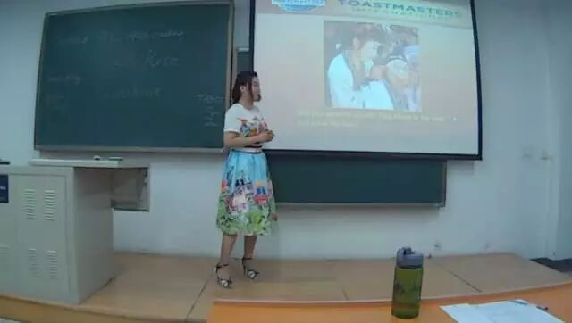
。看来Qiqi一直都是这么雷厉风行，原来回答问题的时候针对问题本身合理展开回答也是回答了问题啊？（这至少是第二次了哟）GET了新技能，不过怎么说呢，也许是爱美之心人皆有之吧，德隆你怎么不把杰克拉着露西去底舱的那段剪出来说露西你愿意和我一起五湖四海？
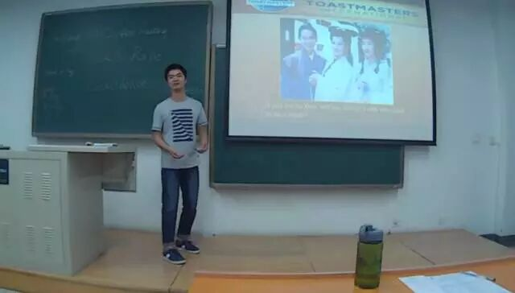
 （外貌协会）的Freshen选择了接受，但是小编认为神话毕竟是神话，传说毕竟是传说，我们选择外敷的这件事情上还是得斟酌再三的好吧，万一哪天晚上睡醒爬起来一看妻子正在进行更换它的角质鳞层（细思恐极呀），所以德隆你站出来，下次出题目天马行空也得有个限度吧！
（外貌协会）的Freshen选择了接受，但是小编认为神话毕竟是神话，传说毕竟是传说，我们选择外敷的这件事情上还是得斟酌再三的好吧，万一哪天晚上睡醒爬起来一看妻子正在进行更换它的角质鳞层（细思恐极呀），所以德隆你站出来，下次出题目天马行空也得有个限度吧！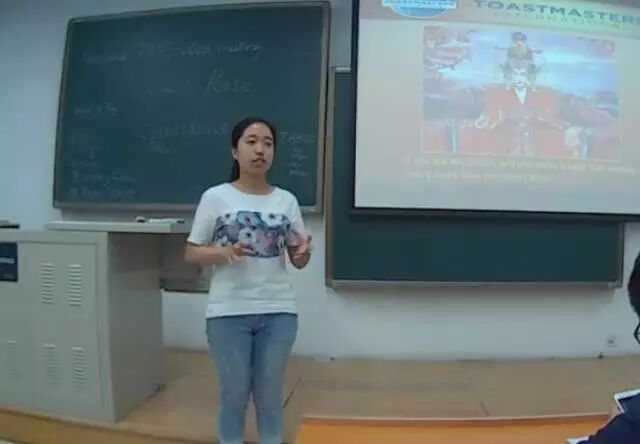
，多么希望Aileen能站上CC的舞台给大家展示一番精彩的演讲啊~~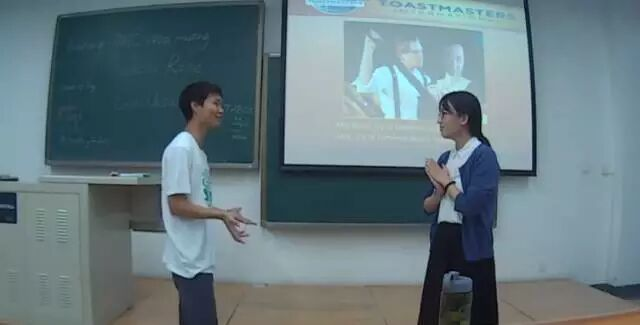
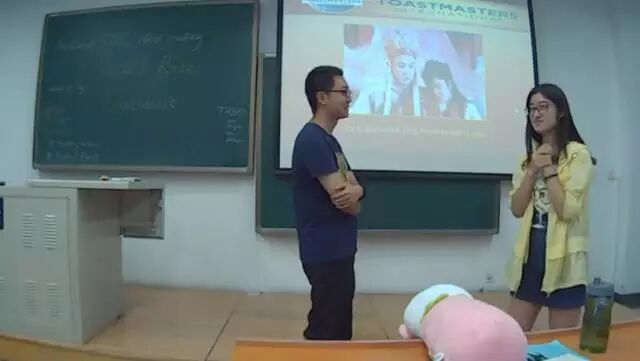
 ，所以，让老衲给你指点一番的话，下一次记得爽快的答应哦~
，所以，让老衲给你指点一番的话，下一次记得爽快的答应哦~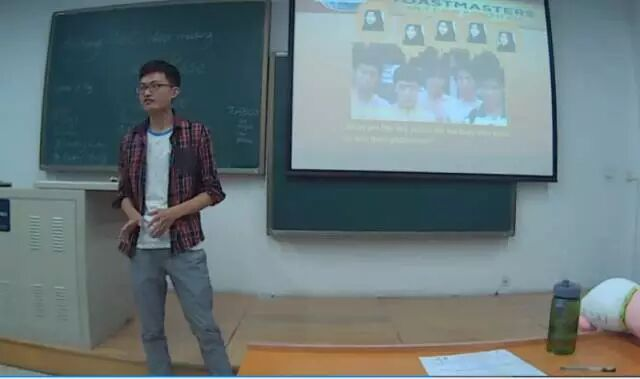
本期的TT环节呢，其实主旨是为了让大家学会换位思考，站在很多其他不一样的角度来看待问题，回答问题，假如你是rose，你会否因为杰克的奉献而一生只钟爱于他一人？假如你是高小姐呢？假如你是武则天？学会换位思考，试着从很多其他的角度去设身处地的想，能解释并让我们理解很多我们一开始并不能接受的决定。

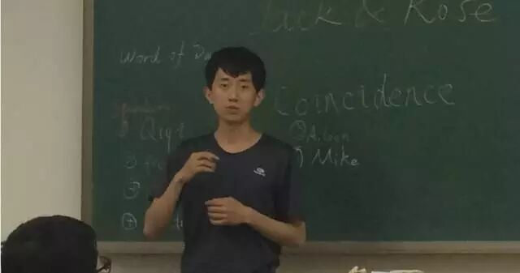
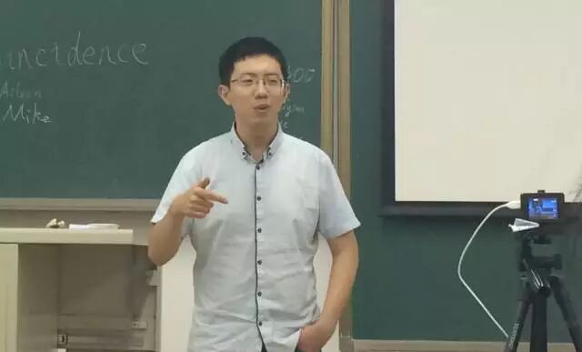


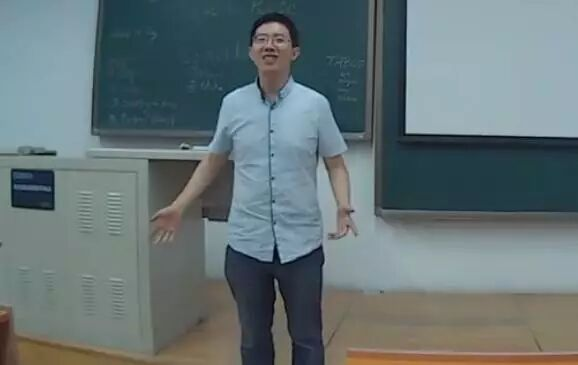
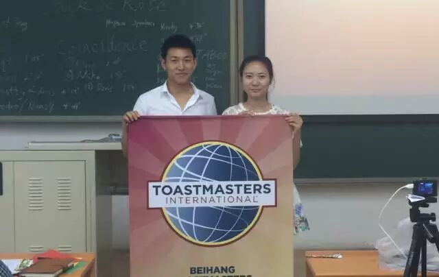


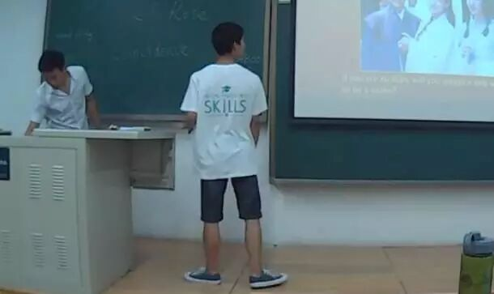


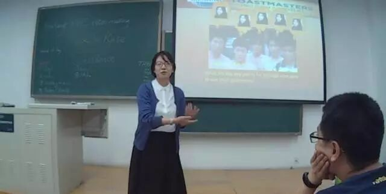


原文链接（公众号关闭后可能失效）：
https://mp.weixin.qq.com/s/2ctcb6KFOWh91iaZcAnHDA
https://mp.weixin.qq.com/s/2ctcb6KFOWh91iaZcAnHDA
第 296/539 篇 · 北航Toastmasters英文演讲俱乐部公众号存档
本页为抢救式本地归档，图文已永久保存。
本页为抢救式本地归档，图文已永久保存。